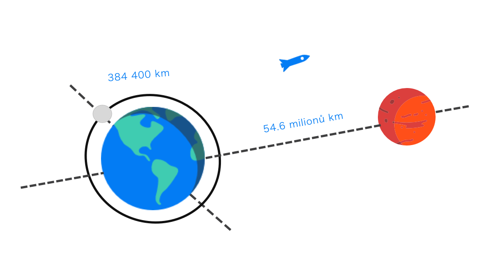
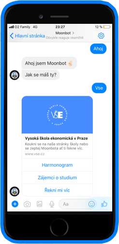
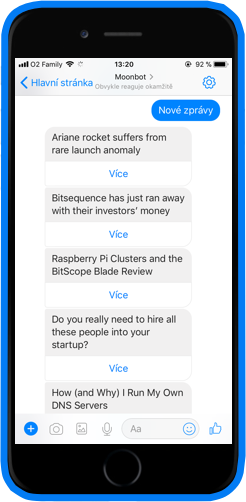
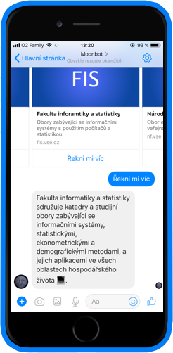

MOONBOT
Aktuální zprávy z VŠE v Praze
Fakulta informatiky a statistiky nechala vytvořit Messenger bota, aby zajistil studentům rychlý přístup k nejnovějším informacím z aktuálního děnní na škole. Bot se může dále zeptat na radu ohledně cesty do školy. Díky zabudovanému vyhledávní pomocí IDOSu Vám, tak může rychle poskytnout nejrychlejší možnou trasu městskou hromadnou dopravu.
Vstup
Aplikaci od společnosti Facebook používá více než 3 miliarda uživatelů denně. Nepochybně je to jedna z nejvíce oblíbených chatovacích aplikací pro chytré mobilní telefony. Platforma v sobě ukrývá hned několik výhod. Jednou z nich je, že si nemusíte instalovat žádnou další aplikaci a odpovědi, které Bot dokáže zaslat fungují 24 hodin denně.
Řešení
Velice sofistikovaný chatovací Bot vám umožní vybrat zpravodaství, které vás zrovná zajímá a bude ho zasílat jednou týdně ve formě zprávy na messengeru. Už vám tak neuniknou žádné nové novinky a zprávy. To vše se zabudovaným jízním řádem, který vám pomůže rychle najít spoj, jak do školy nebo ze školy.
Skoro na dosah

Návrh
Bota jsme navrhli tak, aby co nejrychleji a nejpřesněji předával informace. Výběr technologií ovlivnila potřeba rychle a pružně reagovat na změny. Serverovou výkonnou část bylo třeba postavit na robustní platformě Express.
Implementace
Celý systém byl postavený na JavaScriptovém frameworku Express.js, který zajišťuje komunikaci mezi studentem a botem. Byla potřeba zajistit výměnu dat mezi volně dostupnými IDOS API. Dále byla vytvořena webová aplikace, která slouží hlavně pro prezentaci samotného bota.
- 
- 
- 
Technologie
Node.js, Bootstrap, MongoDB, jQuery